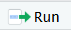
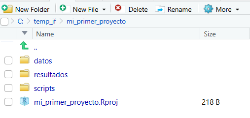

print("¡Hola, R!")Tema 1: Práctica - ¿Qué es R?
Objetivos
En esta práctica aprenderemos a:
- Navegar la interfaz de RStudio
- Instalar y cargar paquetes
- Usar la ayuda de R
1. Explorando la Interfaz de RStudio
Paso 1: Abrir RStudio
Abre RStudio en tu computador. Deberías ver 4 paneles (o 3 si aún no has abierto ningún script).
Paso 2: La Consola
En la Consola (panel inferior izquierdo), escribe:
Presione Enter. Debería ver el mensaje impreso.
Paso 3: Crear un Script
Los scripts te permiten guardar y organizar tu código. Guardar tu código es una buena práctica, te permite guardar el paso a paso de tu analisis.
Para crear un script:
- Ve a
File > New File > R Script(o presionaCtrl+Shift+N) - Aparecerá el Editor en el panel superior izquierdo.
- Escribe el mismo código en el editor:
print("¡Hola desde un script!")
2 + 2Para ejecutarlo: coloca el cursor en la línea y presiona
Ctrl+Entero haz clic en el botón Run.
TipDiferencia
- Consola: Para ejecutar código de forma interactiva (no se guarda)
- Script: Para guardar su código y ejecutarlo cuando quiera
Los comentarios en R se hacen con el símbolo #. Todo lo que esté después de # en una línea es ignorado por R. Puede usar comentarios para explicar su código.
- Incluye un
#antes del codigo que tenia antes e intenta ejecutarlo nuevamente. Qué pasa?
# print("¡Hola desde un script!")
# 2 + 22. Instalando Paquetes
Instalación del Tidyverse
El tidyverse es una colección de paquetes muy útiles para análisis de datos. Instalemos lo:
install.packages("tidyverse")
Nota
Este proceso puede tomar unos minutos. Verá muchos mensajes en la consola - esto es normal.
Verificar la Instalación
Una vez instalado, cárgalo:
library(tidyverse)Debería ver un mensaje indicando qué paquetes se cargaron (ggplot2, dplyr, etc.).
3. Usando la Ayuda
Ayuda sobre una Función
Para acceder a la documentación sobre la función mean() (calcular promedio):
?meanEsto abrirá la documentación en el panel inferior derecho.
Estructura de la Ayuda
La ayuda típicamente incluye:
- Description: ¿Qué hace la función?
- Usage: ¿Cómo se usa?
- Arguments: ¿Qué parámetros acepta?
- Examples: Ejemplos de uso
Ejemplo: Usando mean()
Basándose en la ayuda, calculemos un promedio:
# Crear un vector de números
numeros <- c(10, 20, 30, 40, 50)
# Calcular el promedio
mean(numeros)[1] 304. Explorando Paquetes Instalados
Ver Paquetes Disponibles
En el panel inferior derecho, haz clic en la pestaña Packages. Verás todos los paquetes instalados.
Buscar un Paquete
En el cuadro de búsqueda, escribe “ggplot2”. Haz clic en su nombre para ver la documentación.
5. Configuración Útil (Opcional)
Personalizar RStudio
Ve a Tools > Global Options:
- Appearance: Cambiar tema y tamaño de fuente
- Code: Habilitar/deshabilitar opciones de autocompletado
- Saving: Recomendado desactivar “Restore .RData into workspace at startup”
TipRecomendación
Desactive “Restore .RData” para empezar cada sesión con un entorno limpio
6. Creando un Proyecto en RStudio
Los proyectos ayudan a mantener su trabajo organizado y facilitan la reproducibilidad.
Paso 1: Crear el Proyecto
- Ve a
File > New Project... - Selecciona New Directory
- Selecciona New Project
- En “Directory name” escribe:
mi_primer_proyecto - En “Create project as subdirectory of” elige dónde guardar el proyecto
- Haz clic en Create Project
Nota
RStudio se reiniciará y abrirá el nuevo proyecto. Verá el nombre del proyecto en la esquina superior derecha.
Paso 2: Crear Carpetas de Organización
Ahora crearemos una estructura de carpetas para mantener todo organizado. Dentro de tu proyecto, crea las siguientes carpetas:
datos/: Para guardar sus datosscripts/: Para guardar sus scripts de Rresultados/: Para guardar gráficos, tablas, reportes
Hay múltiples maneras de crear estas carpetas:
- directamente el explorador de archivos de su sistema operativo,
- usando el panel Files en RStudio, o
- usando la Consola con el siguiente código:
# Crear carpetas para organizar el proyecto
dir.create("datos")
dir.create("scripts")
dir.create("resultados")Paso 3: Verificar la Estructura
En el panel Files (inferior derecho), debería ver:

Paso 4: Crear un Script en la Carpeta Correcta
- Crea un nuevo script usando
Ctrl+Shift+NoFile > New File > R Script - Guárdalo (
Ctrl+S) con el nombreanalisis.Rdentro de la carpeta scripts/ - Escribe algo simple en el script:
# Mi primer script en un proyecto organizado
print("¡Proyecto creado exitosamente!")
# Verificar el directorio de trabajo
getwd()- Ejecuta el código (
Ctrl+Enter)
Nota
getwd() muestra su directorio de trabajo actual. Con proyectos, siempre apunta al directorio raíz del proyecto.
Paso 5: Ventajas de Usar Proyectos
Ahora puedes usar rutas relativas en tu código:
# En lugar de rutas absolutas como:
# datos <- read.csv("C:/Users/MiUsuario/Documentos/proyecto/data/mi_archivo.csv")
# Use rutas relativas:
# datos <- read.csv("data/mi_archivo.csv")
TipBuenas Prácticas
- Siempre trabaja en un proyecto
- Usa rutas relativas siempre que sea posible
- Reserva el uso de rutas absolutas para casos especiales. Ej, leer archivos en internet.
- Organiza archivos en las carpetas correspondientes
Resumen de Comandos
| Acción | Comando |
|---|---|
| Instalar paquete | install.packages("nombre") |
| Cargar paquete | library(nombre) |
| Ayuda de función | ?funcion o help(funcion) |
| Buscar ayuda | ??tema o help.search("tema") |
| Ejecutar línea | Ctrl+Enter |
| Nuevo script | Ctrl+Shift+N |
| Crear carpeta | dir.create("nombre") |
| Ver directorio | getwd() |
| Crear proyecto | File > New Project |